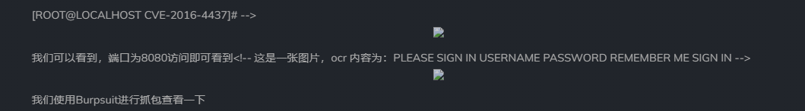
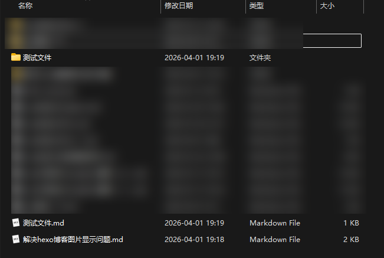
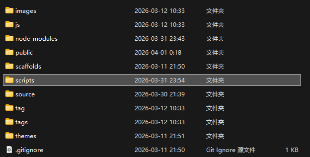
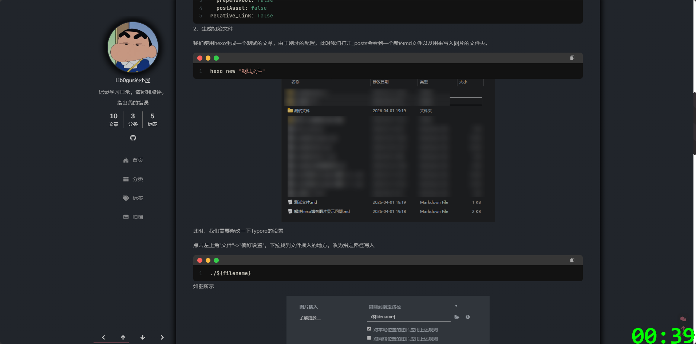

# 起因
在使用hexo + github 搭建的博客，发现上传到github仓库的图片与hexo博客的图片总是存在目录重复等问题，导致我的博客图片无法正常显示，非常影响体验。如下：

首先我们要知道，由于防盗链的存在，cdn的图片基本无法使用
比如我以前习惯使用语雀直接导出md文件再直接传到博客上，由于防盗链的原因，虽然链接没问题，但是github还是无法正常加载出来图片
所以，我们想要使用的话，需要在本地插入图片。所以在此我推荐使用Typora来写md的文章。
# 配置如下：
# 1、修改_config.yml配置文件
首先我们找到hexo根目录下的_config.yml，找到如下设置
post_asset_folder: false改为
post_asset_folder: true
marked:
prependRoot: false
postAsset: false
relative_link: false# 2、生成初始文件
我们使用hexo生成一个测试的文章，由于刚才的配置，此时我们打开_posts会看到一个新的md文件以及用来写入图片的文件夹。
hexo new "测试文件"
此时，我们需要修改一下Typora的设置
点击左上角"文件"->"偏好设置"，下拉找到文件插入的地方，改为指定路径写入
./${filename}如图所示
此时我们再往该文章中保存图片，他就会保存到我们同名文件夹下。即hexo命令自动生成的文件夹
# 3、编写上传脚本
正常来说，此时应该没什么问题了。但是github上传到仓库中时他的链接为
https://github.com/XXXXX/XXXXX.github.io/blob/main/2026/03/31/测试文件/1774968193969.png但我们博客上的图片地址默认为
https://github.com/XXXXX/XXXXX.github.io/blob/main/2026/03/31/测试文件/测试文件/1774968193969.png我们细心比较会发现放图片的路径重复了两遍，这也是我们无法正常加载图片的核心地方。
当然，你可以说我在Typora编辑的时候就给图片删一层目录就可以了。这的确可以解决问题
即如下图所示
原本正常图片的链接该为
[1775042517612](解决hexo博客图片显示问题/1775042517612.png)修改之后为
[1775042517612](1775042517612.png)这样的确可以让你的博客正常加载出图片，但是这样有一个问题，你在编辑的时候无法正确浏览到图片位置，因为你的图片位置是在
[1775042517612](解决hexo博客图片显示问题/1775042517612.png)修改后自然无法正常看到图片
注:上述使用的正常图片链接前需要加!
那有没有脚本可以实现在上传时自动给我们删一层目录呢？这样我们在写的时候也可以正常预览图片，同时博客上也可以正常加载出来图片。
有的兄弟有的
我们在hexo根目录下创建一个名为"scripts"的文件夹(与source同层目录)

新建一个js脚本，我这里的文件名为"fix-image-path.js" 代码如下
// scripts/fix-image-path.js
hexo.extend.filter.register('before_post_render', function(data) {
// data 是当前正在渲染的文章对象
const articleName = data.slug; // 文章文件名（不含扩展名）
// 替换图片路径： -> 
const regex = new RegExp(`!\\[([^\\]]*)\\]\\(${articleName}/([^\\)]+)\\)`, 'g');
data.content = data.content.replace(regex, (match, alt, img) => {
return ``;
});
return data;
});我们清理下缓存再重新上传下看看效果
hexo clean && hexo g -d# 效果展示
图片可以正常加载
